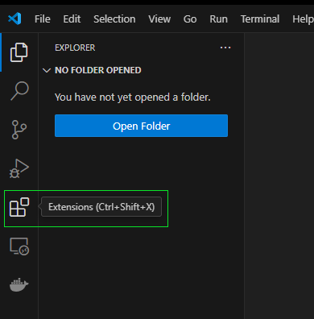
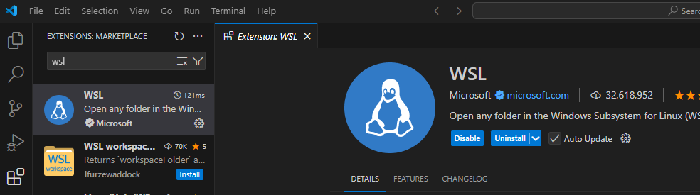
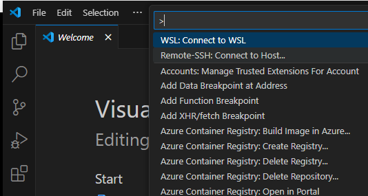
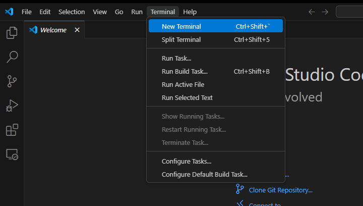
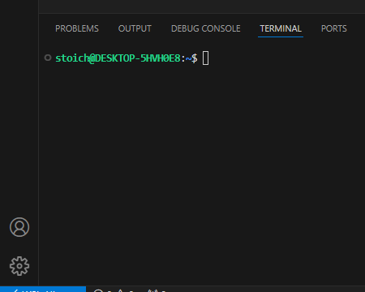

Apuntes sobre comandos básicos en Bash
Comandos básicos en Bash
2. Manipulación de archivos y directorios
mkdir→ Crea un directorio.mkdir nueva_carpetarm→ Borra archivos y carpetas.rm archivo.txt # Borra un archivo rm -r carpeta # Borra una carpeta y su contenido rm -i archivo.txt # Pregunta antes de borrarcp→ Copia archivos o carpetas.cp archivo.txt copia.txt # Copia un archivo cp -r carpeta destino/ # Copia una carpetamv→ Mueve o renombra archivos y carpetas.mv archivo.txt nueva_ubicacion/ mv archivo.txt nuevo_nombre.txt
3. Visualización y edición de archivos
cat→ Muestra el contenido de un archivo.cat archivo.txtless→ Permite visualizar archivos grandes de manera interactiva.less archivo.txt # Usa las teclas ↑ ↓ para moverte, "q" para salirnano→ Editor de texto en terminal.nano archivo.txt
4. Limpiar la terminal
clear→ Borra la pantalla de la terminal, pero no elimina procesos ni historial.clearCtrl + L→ Hace lo mismo queclear, pero sin ejecutar un comando explícito.- En macOS:
Cmd + Ktambién limpia la terminal.
- En macOS:
5. Historial de comandos
Cómo moverse en el historial
↑ (Flecha arriba)→ Muestra el último comando ejecutado.↓ (Flecha abajo)→ Avanza en la lista de comandos previos.Ctrl + R→ Búsqueda rápida en el historial. Escribe parte del comando y pulsaEntercuando encuentres el que necesitas.- Ejemplo: Presiona
Ctrl + Ry escribenano, mostrará el último comando que usaste connano.
- Ejemplo: Presiona
history→ Muestra los últimos comandos ejecutados.historyBuscar en el historial rápidamente con
grephistory | grep ls # Filtra los comandos que contienen "ls" history | grep nano # Filtra los comandos con "nano"
6. Permisos y propiedades de archivos
chmod→ Cambia permisos de ejecucion.chmod +x script.Rev # Permisos de ejecuciónchown→ Cambia el dueño de un archivo.sudo chown usuario archivo.txt
Uso de Ubuntu en Windows con Visual Studio Code y RStudio
Si tienes Ubuntu instalado en Windows a través de WSL (Windows Subsystem for Linux), sigue estas instrucciones para trabajar con tu entorno de desarrollo en Visual Studio Code.
Iniciar Ubuntu en la terminal de VS Code.
Abre VS Code y ve a Extensions (Ctrl + Shift + X)

Busca WSL e instala la extensión oficial de Microsoft.

Teclea el comando Ctrl + Shift + P y selecciona WSL: Connect to WSL

Se abrirá una nueva ventana, ve a **Terminal** y selecciona una nueva **Terminal**

En la parte inferior se abrirá la terminal de Ubuntu
